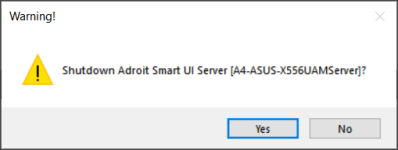
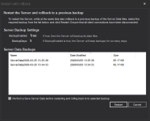
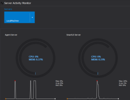
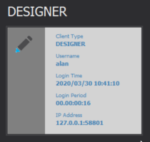
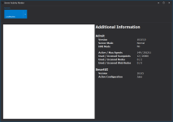
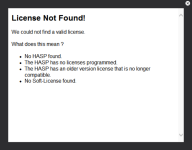
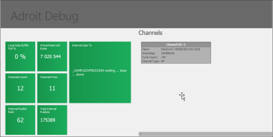
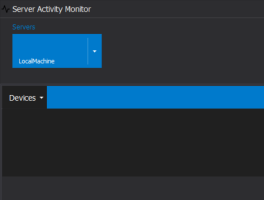
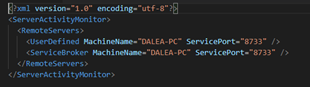

The Activity Monitor is used to display the operational status of the SmartUI Server and several other specific features.
Note: The Activity Monitor is available only when the SmartUI Server runs as an application.
- During the initial SmartUI design phase, you should run the AdroitSmartUI Server as an application.
Click Start then All Apps > Adroit 10 > AdroitSmartUI Server.
- When you conclude the design configuration phase, you should run the AdroitSmartUIServer as a service.
Click Start then All Apps > Adroit 10 > Adroit Technologies Service Manager then start the service.
- When running as a service, the Activity Monitor does not shut down when you sign out.
Tip: The System Information datasource of the SmartUI Server extends the troubleshooting functionality provided by the Activity monitor. For more information, see System Information.
Note: For more detailed information on starting the SmartUI Server as an application or service, see Launching the Server.
- Launch the Server as an application by clicking the Start menu, Programs, Adroit 10, and the SmartUI Server item.
- Click the Launch Activity Monitor to open the Activity Monitor.
- Note: The Activity Monitor is only displayed if the ActivityMonitorFormEnabled setting for this Server is enabled. For more information on this setting, see Advanced Server settings.

The ActivityMonitorFormTitle setting specifies the title of this application.
- Warning: The Server window is not displayed if the SmartUI Server is running as a service.
- If the server is already running, then right-click the Service Manager icon
in the Taskbar tray to open the Service Manager dialog, then select Launch Activity Monitor.
- Tip: When the SmartUI Server is running as an application, you may also press the ALT+TAB KEYS repeatedly until the task switcher displays the Server window, then select Launch Activity Monitor.
- If the server is already running as a service, then right-click the Service Manager icon
- The Activity Monitor opens and displays information on the Local Machine tab.
The Server window offers the following options:

- Launch Activity Monitor
- The Activity Monitor displays a range of information options that assist you in assessing the status of the SmartUI Server.
- Shutdown Server

- This option is identical to clicking the close button in the title bar and then displays a confirmation dialog to terminate the Server.
- Restart Server
- This option shuts the Server down and then restarts it again.
- Restart With Rollback

- This option shuts the Server down and restarts it again using a saved state you can select (i.e., the previous backup data file).
- For more information on how to save the Server, see Saving the Server.
- Warning: There is no guarantee of the stability of a previously saved state.
Click on each feature below to view more information:
The performance data shows current CPU and RAM usage:
- Circular charts reflect the current load on the CPU and Memory on each of the connected servers.
- A Sparkline
A sparkline is a very small line chart, typically drawn without axes or coordinates. It presents the general shape of the variation in some measurement, such as temperature or stock market price, in a simple and highly condensed way. chart gives an indication of performance over the previous hour for each of the connected servers.

The Activity Monitor also displays a list of messages, showing the date, time, and activity, for each activity performed by the servers.
The Clients currently connected to this Server are displayed as follows:
- Clients are identified by a labelled tile, for example, Designer, Operator, or a Web Client.

- Each tile displays information in the following format:
- Title: [Client Name]
Client Type: Operator, Designer, Web Client.
Username: Name of the user currently signed in.
Login date: The date the user signed into the Server.
Login period: The length of time the user has been connected.
IP Address: The IP address of the user.
Display the Licence information on the Activity Monitor
Click the drop-down arrow then select the Licence Information option.

SME: Should there not be licence information in this white box? Could you provide a similar image that contains valid data?Display the Licence Information dialog from the Service Manager
- To start the Server, click Start then All Apps > Adroit 10 > Adroit Technologies Service Manager.
- If the Server is already running, a tray icon
- Right-click the tray icon then select the Open /Close Service Manager option.
- On the Service Manager dialog, select the Licence Information option.
- The Licence Information dialog is displayed and provides a summary of the licence details.

SME: can you provide genuine active licence detail?- Note: This Licence Information window remains open and on top of other windows until you click the Close at the upper-right-side of this dialog.
Select Licence Information tab to display some Additional Information:
Click the drop-down arrow then select the Licence Information option.
- Version - The currently Adroit version.
- Server Mode - Master/Standby/Normal.
- HMI Mode - The HMI
- Active/Max Agents - Agents assigned to the project.
- Used/Licensed Scanpoints - Scan points used for the project.
- Used/Licensed Nodes - Clients connected.
- Used/Licensed Web Nodes - Available PerformanceAnywhere Clients.
SME: Is there any more information that should be said about the server messages?
Display the Debug Information on the Activity Monitor
Click the drop-down arrow then select the Adroit Debug option.

SME: Is there any more information associated with each clickable green tile? Could you provide a similar dark image that contains valid data?
Display the Driver information on the Activity Monitor
The Driver Monitor lets you view all the devices configured on the remote Adroit Server. The options available are:
- You can configure a Refresh Rate and a Filter.
- The filter is a regular expression that lets you potentially filter messages to only display, for example, messages regarding specific agents.
- Example Expression: Agent[2-4], Random – filters messages containing either “Random” or “Agent2”, “Agent3” and “Agent4”, other messages are hidden.
- Additional Options include exporting the data in the window to various file types.
- SME: Is there any more information associated with each driver?
Click the drop-down arrow then select the Driver Monitor option.

SME: Can you provide a similar dark image which contains valid driver data?
Display the Remote Servers on the Activity Monitor
SME: Can you provide a similar dark image and XML file which contains valid Remote Server data?
You should always see the Local Machine or Server (if one is present).
- Any additional Remote Servers added or configured are visible on this window.
- All listed servers have clickable options at the upper-right-side of the window.
- All listed servers are also visible and scrollable left and right in the window.
- Clicking on the tiles navigate to the respective pages, for example, licensing and performance data.
- Configuration of additional server will reside in a XML configuration file.

SME: Is there any more information associated with the respective pages of each remote server?
 To use the
Activity Monitor, start the Server
To use the
Activity Monitor, start the Server